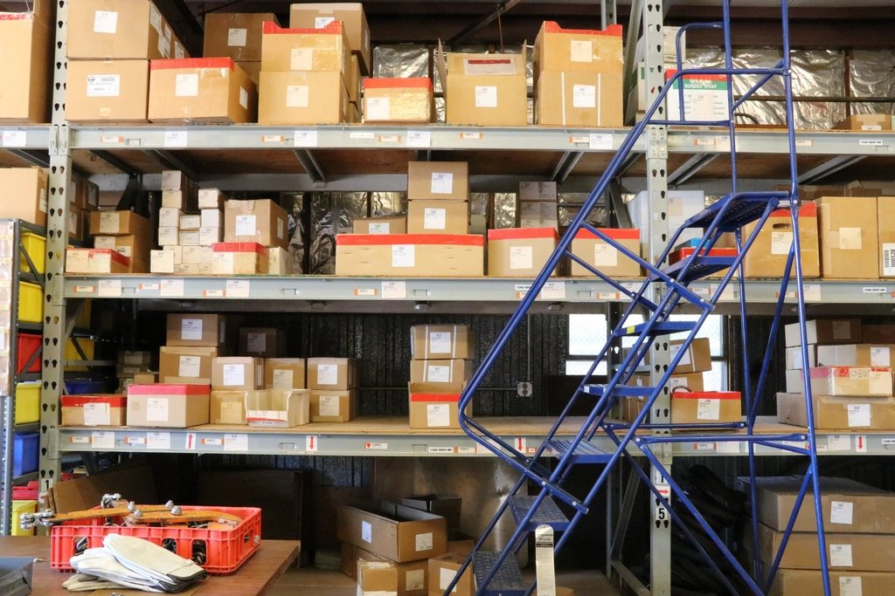
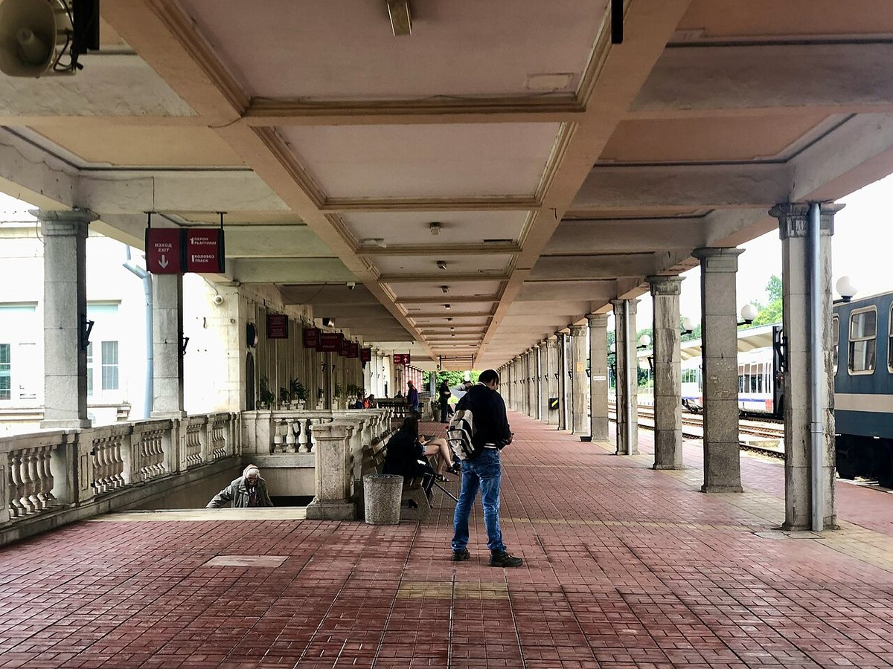

畫面：辦公室會議室｜主管向坐著的一群人說明
🔑 看到 all／everyone／both 這種「全部」的字，先回照片確認有沒有一個人例外——只要有一個人不符合，這個選項就是錯的。
畫面：咖啡店｜兩位店員站在吧檯後工作
🔑 Part 1 很愛把「甲正在做的事」接到「乙」身上——先確認動作落在哪一個人，再判斷這個選項對不對。

畫面：倉庫｜貨架上堆滿紙箱、梯子靠在旁邊
🔑 照片裡沒有人的時候，正確答案幾乎都是 is／are＋分詞的狀態描述（stacked、lined、parked），而錯誤選項常出現「有人在搬、在爬」這種動作。
畫面：公園｜走道旁長椅坐著人、路燈掛著花籃
🔑 「有人在旁邊做別的事」是最常見的錯項（playing／riding／watering）：先掃一遍全圖確定有沒有那個動作，再檢查主詞對不對。
畫面：餐廳廚房｜戴高帽的廚師在檯面前作業
🔑 人物前面加 the（the chefs／the customers）唸起來很順，但照片裡如果沒有那種人，選項就是錯的——先數人數，再確認身分。

畫面：火車站月台｜石柱、紅磚地面與停靠的列車
🔑 「列車 is waiting at the platform」這類狀態句在 Part 1 很常出現；注意 be＋V-ing（正在發生）和 be＋分詞（靜態狀態）的差別——照片是靜止的，多半是狀態。
| 題 | 檔案 | 作品／作者・授權 | 來源 |
|---|---|---|---|
| 1 | p1_q1.jpg | Business People／Direct Media CC0（公眾領域貢獻）・StockSnap | 來源頁 → |
| 2 | p1_q2.jpg | Restaurant Bar／Afta Putta Gunawan CC0（公眾領域貢獻）・StockSnap | 來源頁 → |
| 3 | p1_q3.jpg | Rolling warehouse ladder／rawpixel CC0（公眾領域）・rawpixel | 來源頁 → |
| 4 | p1_q4.jpg | Park Bench／Tricia Gray CC0（公眾領域貢獻）・StockSnap・原圖為直幅，這裡取中段裁成 4:3 橫幅，讓版面與其他照片一致（人物與長椅都保留）。 | 來源頁 → |
| 5 | p1_q5.jpg | Restaurant kitchen／rawpixel CC0（公眾領域）・rawpixel | 來源頁 → |
| 6 | p1_q6.jpg | Ruse Central train station, platform 1／Gymate CC0（公眾領域貢獻）・Wikimedia Commons | 來源頁 → |